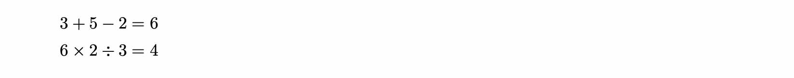
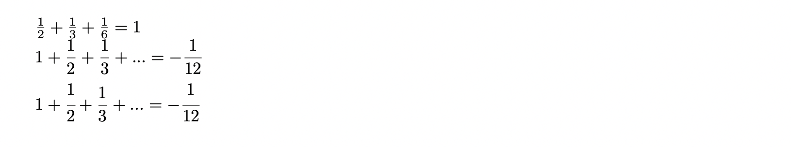

Macの場合
Windowsの場合
早速数式を書いていきます。コマンドはいくつもありますが、どんどん使って慣れていきましょう！
基本の基本、四則演算を書けるようになっておきます。もちろん\begin{document}と\end{document}の間に書くことを忘れずに。
また、数式を書く際には「$ $」で囲むことに注意です。次のコード例と結果を見てみましょう。
$ 3+5-2=6$\\
$ 6\times 2\div 3 = 4$

+ や - , = はそのままでOK。ただし、×・÷はそれぞれ\times ,\div を使います。
\times ,\div の後にスペースが入っていますが、これは必要なものです。 バックスラッシュ(\)または円マークの後は TeX でコマンドとして認識され、\times2 と書くと times2 までがコマンド名と認識されてしまいます。 バックスラッシュやアンダーバーなどがあればそこでコマンド名としての認識は完了しますが、原則としてスペースを空ける癖をつけておきましょう。 なお、半角スペースは TeX ファイルでは無視されて pdf には反映されません。
次に分数です。これには3つの形式があります。
ここで注意なのは、 amsmath というパッケージを読み込む必要があります。
そのためにはプリアンブル(\begin{document}の前)\usepackage{amsmath}と書き込んでおく必要があります。(usepackageについては後で詳しく解説します。)
\documentclass{ltjsarticle}
\usepackage{amsmath}
\begin{document}
\noindent
$\frac{1}{2}+\frac{1}{3}+\frac{1}{6}=1$\\
$1+\dfrac{1}{2}+\dfrac{1}{3}+...=-\dfrac{1}{12}$\\
$1+\cfrac{1}{2}+\cfrac{1}{3}+...=-\cfrac{1}{12}$
\end{document}

これらは1つ目のカッコに分子を、2つ目のカッコに分母を入力します。\frac ,\dfrac, \cfracの違いとしてはそのサイズにあります。 \frac は文と同じ大きさで、次の画像のそうなサイズ差があります。
サイズ差を利用して、次のように分数を重ねることもできます。
$\dfrac{36}{11}$を正則連分数展開すると
$\dfrac{36}{11}=3+\cfrac{1}{3+\dfrac{1}{1+\frac{1}{2}}}$となる。
式が長くなると確認が大変ですが、左カッコと右カッコの数が同じになるよう注意しましょう。